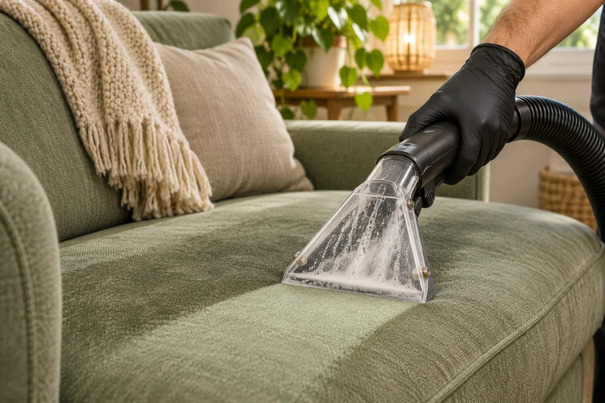
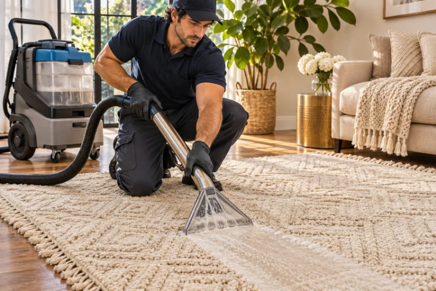
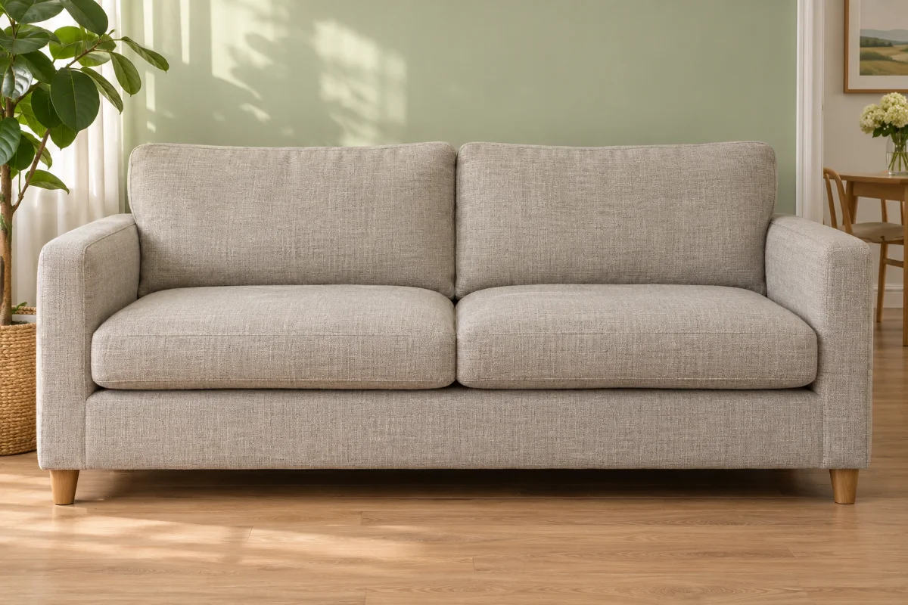
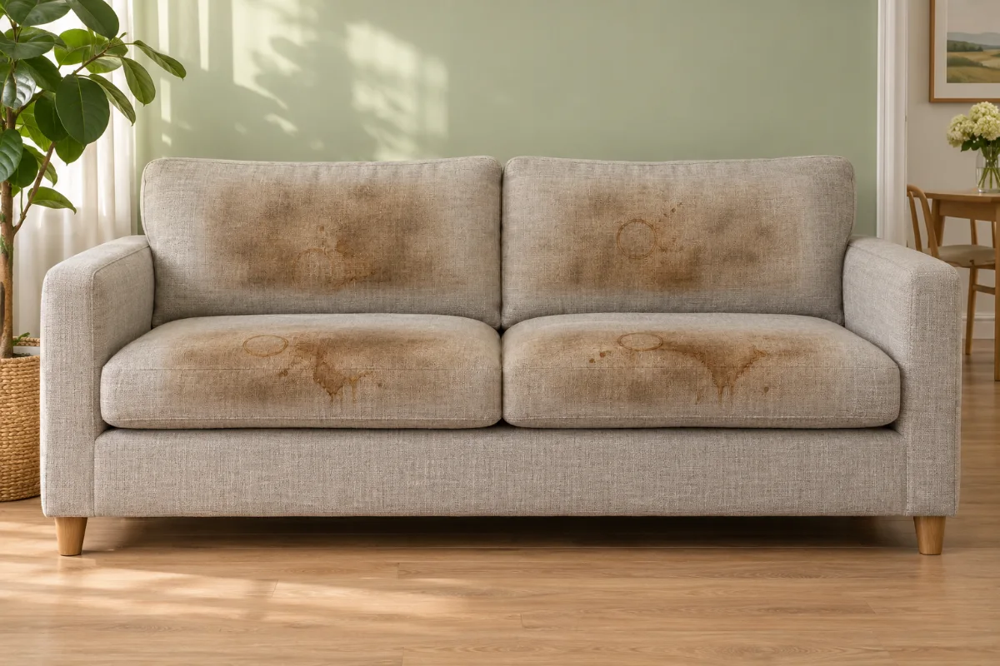

Профессиональная химчистка мебели
Приеду и почищу мягкую мебель, матрасы и ковры.

Связаться
Что я чищу
Диваны
Кресла
Ковры
Матрасы
Другая мягкая мебель

До/после
Демонстрационный пример чистки обивки


Контакты
Позвоните мне.
+7 (831) 415-13-13